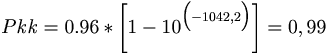

De: La Frikipedia, la enciclopedia extremadamente seria.
De: La Frikipedia, la enciclopedia extremadamente seria. De: La Frikipedia, la enciclopedia extremadamente seria.

|
Este artículo necesita ser ilustrado. Busca una afoto en nuestro depósito de imágenes o donde sea y ponla, pero que no sea pr0n, que se cabrea el señor del adSense y nos corta el grifo de los dólare. Y sin dólare no hay servidor... |
Un Marrón (Brown) es todo aquel trabajo que nadie desea realizar. Dependiendo de la situación desde la que se observe, el Marrón puede tomar distintas connotaciones.
Es aquella tarea de suma importancia para el desarrollo estratégico de la empresa que ha de ser realizada con el máximo esmero y en el menor plazo posible.
Es el hartarse a currar, normalmente como consecuencia de la última idea genial del jefe, con un trabajo que no suele servir para nada, pero que debería estar listo ayer.
Agravantes que pueden darse en un marrón:
En general, los marrones se reconocen inmediatamente, pero por si el lector es aún novato en estas lides y tiene dificultades en reconocerlos, se dan a continuación algunas pistas
Por regla general, la introducción del Marrón suele llevarse a cabo por medio de frases del estilo de: “Oye, tú no tienes nada urgente que hacer, ¿verdad?” o “Mira, ha surgido una cosa que hay que resolver esta misma tarde”.
Una vez que el Marrón ha caído encima, se le puede reconocer por los siguientes síntomas:
Si, pese a las indicaciones anteriores, el lector aun no tiene claro si lo que le ha caído encima es un Marrón, puede llevar a cabo la llamada prueba del nueve del Marrón: solicitese ayuda a un compañero referente al Marrón objeto de sospechas.
Si el compañero responde con alguna de las siguientes evasivas...
· “Es que yo no sé nada de eso...” · “Es que estoy muy ocupado...” - cuando ostensiblemente se ve que no está haciendo nada. · “Mira, a mí no me líes”
...puede estarse plenamente seguro de que uno se está enfrentando a un auténtico y genuino Marrón.
El Marrón tiene como principal característica la presencia de numerosos sujetos involucrados en su ciclo de vida y a los que nos referiremos continuamente a lo largo del documento. Lo que sigue es una lista incompleta de los sujetos más comunes implicados.
Los sujetos activos del Marrón son los encargados de dirigir los marrones hacia los sujetos pasivos. Dependiendo del organigrama de la empresa, los sujetos activos pueden, a su vez, ser sujetos pasivos de otros. La siguiente lista describe los tres tipos más usuales de sujetos activos, en orden creciente de actividad marronera.
El browner es aquel sujeto que, por las características de su puesto (o de su forma de ser, que hay de todo) asigna marrones a los demás. Cualquier persona que consciente o inconscientemente te suelte un Marrón adquiere automáticamente la categoría de browner.
El browner suele asignar marrones de forma esporádica o prolongada en el tiempo. También existen browners que marronean de forma más periódica, pero siempre con un volumen reducido de marrones.
No debe odiarse en exceso al browner, ya que él, a su vez, suele tener otros browners por encima que generan los marrones que él se limita a reasignar (usando una técnica de “Brown Throwing”, que se verá más adelante).
El brown dispatcher es un tipo especial de browner, cuya función es la asignación periódica y sistemática de marrones.
El brown dispatcher, a veces conocido como Jefe de Proyecto, se caracteriza por sufrir de una personalidad inestable y tornadiza que le hace cambiar de parecer con frecuencia, suprimiendo los marrones asignados y/o reemplazándolos por otros si cabe aún más inútiles.
Los marrones endiñados por un brown dispatcher suelen ser continuos en el tiempo y de duración discreta.
Este es el browner supremo. O Rei se caracteriza por la generación de marrones de proporciones titánicas, sencillísimos según él, que deben estar terminados siempre en un tiempo récord.
O Rei suele ocultarse tras una fachada inocente que oculta sus aviesas intenciones. No se sabe de ningún O Rei que no se haya dirigido amablemente a sus víctimas antes de enmarronarlas. Se dice de ellos que son lobos con piel de Cordero, en honor a uno de los más famosos Reyes que ha conocido la historia.
Como suele suceder, la inutilidad de los marrones endiñados por un O Rei es directamente proporcional al esfuerzo necesario para conseguirlos e inversamente proporcional al tiempo disponible para acabarlos.
Existe una variedad mutante del O Rei, de denominación incierta (O Mais Portentouso Enmarronador do Universo Mondo, es la más común) que se caracteriza por ser un híbrido de O Rei y Dispatcher. Obviamente, estos sujetos son seres desgraciados (en su doble acepción) ya que todo el mundo rehuye hablar con ellos ante la altísima probabilidad de acabar cubierto de mierda.
Los sujetos pasivos son los destinatarios finales del marrón. La característica de sujeto pasivo no debe ser objeto de frustración, ya que existen técnicas que pueden hacer al sujeto pasar de pasivo a activo, como se verá más adelante en este documento.
La siguiente lista describe los cuatro tipos más usuales de sujetos pasivos, en orden creciente de probabilidad marroneante.
Se denomina browned a todo sujeto al que acaba de caerle encima un marrón.
Todo el mundo es vulnerable a verse enmarronado, “everybody is brownable”, por lo que categoría de browned no es exclusiva de ningún grupo específico.
«Se enmarrona el Rey, se enmarrona el Papa y de enmarronarse nadie se escapa»
~ Brownzowski en uno de sus corolários
El brown finder o tontolculo es un tipo especial de sujeto presente en toda empresa al que su especial forma de ser le convierte en candidato especial a comerse marrones.
Se le reconoce fácilmente pues sus frases suelen empezar por entradas como “Yo me ofrezco voluntario” o “Yo te echo una mano”. Esta predisposición a comer marrones les hace ganar muchos amigos, tanto entre los compañeros como entre los jefes; pues ven en él un blanco de descarga inmediato.
El Brown Eater es un sujeto desdichado cuya existencia parece girar en torno a la comida de marrones. Morador habitual de la Brown Room (ver más abajo), el comemarrones empieza y acaba su jornada laboral sepultado entre toneladas de papel y agobiado por multitud de marrones, reales o virtuales.
No todos los Brown Eaters consiguen sobrevivir. El camino es largo, duro y erizado de trampas. Sin embargo, aquellos que logran remontar la condición de comemarrones deben ser tratados con suma cautela; esto es así porque el largo periodo de comida marronil afecta severamente a sus cerebros y, desde ese momento, sólo viven para la venganza. Debido a ello, un comemarrones liberado tiende asintóticamente a reciclarse en Brown Dispatcher de Primera.
El PBC (siglas de P... Becario de los C...) se encuentra en el escalón más bajo de la escala evolutiva y por tanto carece de derechos pero no de deberes. Estas dos características se combinan de un modo tan perfecto que los browners (de todo tipo) les tienen considerados como comemarrones de primera.
Son limpios, educados, no se quejan, trabajan como cosacos y, en algunos casos, no cobran. No es de extrañar, pues, que las empresas hagan un uso cada vez más extensivo de PBCs.
El PBC suele acabar de dos formas posibles: contratado por la empresa, con lo cual cambia sus grilletes de hierro por unos de acero inoxidable; o ingresado en el instituto frenopático más próximo, incapaz de aceptar la presión.
El Marrón no es un objeto aislado. Parte de su idiosincrasia reside en el conjunto de accesorios y/o complementos de que se rodea y que contribuyen a darle carácter. He aquí una lista de terminología corriente, aplicada al marrón.
La más usada. Es el hecho en sí mismo de haberse convertido en receptor de un Marrón fresquito. Afortunadamente, el hecho de comerse un Marrón no tiene por qué implicar tener que finalizarlo.
Se denomina así al documento (impreso o electrónico) donde se van apuntando los marrones, tanto encargados como planificados.
El marronómetro puede adquirir diversas y variadas formas, recibiendo nombres curiosos según se les iban ocurriendo a sus creadores. Así podemos encontrar el Diagrama de Gantt, el Cuaderno de Carga, etc..
En general, el marronómetro sirve para que los Browners tengan apuntadas las fechas previstas de finalización del Marrón y, llegado el momento, se sientan en el derecho de exigirlo. El marronómetro es una de las más fuertes medidas de presión psicológica que pueden aplicarse al Browned.
También denominada Zona de Alto Riesgo de Marrón, es un lugar donde la probabilidad de comerse un Marrón es mucho más elevada de lo normal.
Estas zonas no suelen estar delimitadas físicamente, siendo un conjunto finito (distinto del vacío) de recintos múltiplemente conexos, abiertos o cerrados, entre los cuales no tiene porqué existir una relación causal.
Suelen ser Brown Zones los despachos de los jefes, las zonas colindantes a dichos despachos y aquellos lugares por los que suelen pasar con frecuencia. También pueden incluirse en esta clasificación las zonas frecuentadas por los browners. Es imprescindible evitar estas zonas en la medida de lo posible, ya que la probabilidad de comerse un Marrón es directamente proporcional al tiempo que se pase en ellas.
También conocida en ciertos entornos como staff, es el lugar donde los browners suelen elegir a sus víctimas. Se sabe de empresas que dedican espacios específicos como Brown Rooms.
Normalmente estas salas están ocupadas por personas inmersas en una febril actividad, enmarronadas hasta las cejas, de tal forma que no es extraño ver esparcidos por la sala paquetes de patatas fritas o cajas de pizza formando altos montones. En algunas Brown Rooms se han llegado a encontrar camastros o catres, pues es sabida la tendencia de los moradores a hacer noche en ellas.
Otra característica de las Brown Rooms es que, al no tener un momento libre en que poder abandonarla, los Brown Eaters que las pueblan suelen ser los candidatos más probables a comerse el siguiente marrón, para su propia desgracia; con lo que abandonar la sala es cada vez más difícil, al entrar en un proceso eternamente recursivo.
Contráriamente a lo que pueda pensarse, el Marrón no es un objeto claramente definido. Existen varios tipos de Marrón y conocerlos ayuda a delimitar con claridad la actitud a tomar ante la inminencia o hecho consumado de una comida de marrón.
Es un Marrón que sobrevuela las cabezas de sus posibles destinatarios sin decidir sobre quién caer ni en qué momento hacerlo.
Este Marrón tiene la característica de que es conocido con antelación, lo cual posibilita la adopción de medidas preventivas por parte de los candidatos a browned. La táctica más conocida es contraer una repentina enfermedad que impide al browned acudir a la oficina durante una semana o dos. Sin embargo, está técnica es ampliamente conocida por los browners y no se recomienda. Otras tácticas más útiles suelen ser autoasignarse marrones inexistentes y mucho más urgentes encargados por falsos browners que impiden la asignación del floating brown. No obstante, ¡cuidado! ya que esta técnica ha demostrado en ocasiones ser un arma de doble filo.
Este es el Marrón que nadie se espera. Se trata de la modalidad más corriente de Marrón ya que si los marrones estuvieran previstos sería mucho más fácil esquivarlos.
Se trata de un Marrón que cae sobre uno de repente, sin previo aviso, de tal forma que cuando uno quiere darse ya está enmarronado y ni siquiera ha tenido tiempo de abrir la boca. Esta es una modalidad del unexpected brown con agravantes, ya que en este caso el tiempo de respuesta del sujeto pasivo es superior al tiempo de dispatching del browner, con lo cual el Marrón casi siempre consigue alcanzar su total plenitud.
Se recomienda un gran entrenamiento para este tipo de marrones, ya que, al ser altamente inesperados, sólo el tiempo de reacción y capacidad de réplica (o labia) del sujeto pasivo pueden lograr esquivarlo.
Este es el tipo más fatídico de Marrón ya que, como su propio nombre indica, posee unas características que convierten al sujeto pasivo en el receptor idóneo para el mismo; debido a ello no importará el volumen previo de marrones adquiridos o los llantos, pataletas y/o blasfemias del enmarronado: el brown entrará hasta la bola sobre el desdichado browned.
Este es un tipo de Marrón que evoluciona en el tiempo, de tal manera que, aunque inicialmente se planteó de una determinada manera, acaba convirtiéndose en la cosa más insospechada, generando toneladas de basura por el camino.
También entran en esta categoría aquellos marrones reconocidos como tales pero que aparentemente están bien dimensionados en tiempo, lo que permite respirar un poco; pero que, sin embargo, escasos minutos después eclosionan ante llamadas del tipo de la siguiente:
· ¿Tienes ya ese encargo?
· Ah, pero, ¿lo querías ya?
· Jod..., claro, ¡si tengo la reunión a las seis!.
Este es el Marrón de tu vida, el que te dejará indefectible marcado a sangre y fuego para siempre. Los marrones pata negra suelen ser ilimitados en tamaño pero de duración discreta, lo que agrava aún más sus características, de por sí dañinas.
Como el astuto lector habrá sospechado, los browners que endiñan marrones de este estilo adquieren automáticamente la categoría de O Rei do Marrón.
El desafortunado comedor de un Marrón pata negra, una vez que haya podido sobrevivir a él, gozará, no obstante, de una gran ventaja sobre sus otros compañeros, y es que acabará tan escocido que será muy difícil para los browners colarle nuevos marrones: las técnicas defensivas del ex-browned habrán mejorado ostensiblemente e incluso pueden tornarse agresivas según los casos.
Este Marrón es un caso especial y peligroso que suele desarrollarse en tres fases.
· “...si es que soy un gilip...”
· “¡quién c... Me mandaría a mí...!”
El más temido y a la vez el más odiado. Es el que te endiñan cuando, al final de la jornada laboral establecida en el convenio (risas), y tras recoger tus cosas para irte a casita, se acerca el jefe (o similar) y pronuncia la siguiente sentencia (algunos la llaman invocación demoniaca): “¿Tienes un momentito?”.
A partir de ese instante, sólo una mente rápida será capaz de inventar una excusa plausible que permita la pronta huida. Es conveniente disponer de un amplio repertorio, ya que el excusarse alegando citas con el dentista o similar una y otra vez puede llegar a despertar el chip de alarma del jefe.
En condiciones normales, el browner, ignora, desconoce, desestima e incluso rehusa la esencia del brown por distintas y numerosas razones. Pero existen casos de browns, en los que el browner, no es que no sepa, desconozca, ignore, etc. la esencia del brown, es que no vislumbra ni en su mejor sueño de que trata el brown.
Es en estos casos, cuando el browner hace uso de uno de los browned (normalmente utiliza a los más resolutivos) para que saque adelante un brown auténtico (suelen ser Black Leg Browns).
El proceso consiste en pasar a la víctima una documentación escasa, pobre, e ininteligible para que descifre, planifique y finalmente resuelva el brown en cuestión. Es entonces cuando se habla de Autodetección del Marrón.
Este proceso debe de realizarse con suma delicadeza. Durante el tiempo que dure, puede que el browned quede bloqueado (“hanged”). Este hecho puede ser totalmente asintomático por lo que el browner debe de estar atento a todo el proceso. También puede manifestarse de muy diversas formas; vista fija e inmóvil en el pseudodocumento entregado, emisión de balbuceos en bajo volumen que pueden tornarse a sollozos, caras desencajadas, juramentos desgarradores (irreproducibles según el libro de estilo de esta redacción), suspensión de toda actividad sexual (si es que la hubiese), sudor frío, etc.. Si se llegase a este punto, debe de resetearse al browned.
Para ello, el browner, si desea el éxito, no debe utilizar la formula “Venga déjalo.. es igual, sigue con lo que estuvieras haciendo”. ¡Eso equivaldría a admitir la derrota! El browner tilizará esta otra: “Vete a casa y ven mañana” (los lectores más suspicaces, se habrán percatado del paralelismo existente con las nuevas tecnologías del plajanplei, siguiendo la máxima de que o va a la primera o ya no va a ir nunca).
Esta es la razón, por la que los browners intentan eludir este tipo de browns. Tienen miedo de que algunos de sus mejores brownable-people queden inutilizados durante algunas horas e incluso días. No hay datos oficiales pero hay quien ha llegado a asegurar que en algunos casos los daños producidos por este proceso son irreversibles.
No obstante, si el browned consigue completar el proceso y salir adelante, le queda la insatisfacción de haber conseguido algo que nadie le va a reconocer, ya que sólo él puede saber lo que ha tenido que hacer para sacar esto adelante, puesto que los demás browned se limitan a presenciar ajenos a todo, la secuencia antes descrita y el browner por su lado, bastante tiene el pobre (fíjate) con resetear al browned si fuera necesario.
He aquí pues, una versión agresiva de Brown, con la salvedad de que no sólo es temida por los browned, si no que también siembra el pánico entre los más aguerridos browners.
Otra de las variantes en las que podría englobarse el tipo anterior, podría ser el de Marrones Sonda. En el fondo, todos y cada uno de los marrones, podrían calificarse como sonda, aunque hay casos muy claros en los que se esta dando un auténtico Probe Brown, al igual que hay otros casos que no se podrían calificar de tales, como es el caso de los Marrones Fulminantes (Flashing Browns).
Es ciertamente difícil describir con precisión las características de este tipo de browns, ya que como hemos dicho, casi la totalidad de los browns, tienen algo de sonda. Pero si hay un detalle claro y evidente, ese es el comienzo de un Sonda:
· “Oye mira es que el tema ese de ......”.
· “No, no, si ya...”.
· “Mira oye, fíjate un momento en esto....”.
· “Oye te has dado cuenta de esto...... es que quizás se podría hacer esto otro si.....”.
El browner, deja caer en un primer contacto, una serie de frases comprometedoras, esperando que en cualquier momento, el browned (inocente de él) le de alguna contestación al respecto.
Esto se conoce como sondeo del marrón. Se deja caer con suavidad como flotando, como si en realidad no fuera un brown, a ver que pasa, a ver si cuela, a ver si suena la flauta. ¡Punto fundamental este! Es necesario hacerse el sueco con naturalidad; de no ser así, el browner asignará el Marrón con el agravante de recochineo (esto puede reconocerse por las risas retorcidas que dejará escapar al volver a su puesto).
En estos casos, los browner, tienen un comportamiento ciertamente tierno cual corderos camino del matadero; pero lo que ignoran los browned susceptibles de convertirse en víctimas (evidentemente los mas talludos no caerán en este truco) es que detrás de esta fachada se puede esconder el Marrón de su vida (o el que acabe con ésta).
Se han dado anécdotas, como la acaecida en una pequeña empresa de cuyo nombre no quiero acordarme, en la cual casi la totalidad de los browned, fueron dados de baja, quedando unos pocos y siendo todos estos unos browned ya quemados, endurecidos y con una larga lista de browns marcados a sangre y fuego en sus rostros (todos ellos “pata negra”, claro está).
Esta circunstancia, hizo que los browns, o eran tales, o no había nada que hacer. Es decir, o el browner entraba a saco a por el browned (haciéndolo unavoidable) o que si quieres arroz, Catalina.
Evidentemente, en esta situación los marrones sonda no tienen razón de ser, porque si a algún browner se le ocurriese soltar una sonda, tendría las mismas posibilidades de volver a verla, que de volver a ver el Halley. Quizás su segunda o tercera generación pudiera tener noticias de aquella.
La siguiente lista pretende mostrar algunas de las situaciones más frecuentes relativas a los marrones y su entorno. La lista, aunque exhaustiva, no es completa. Como suele decirse, no están todos los que son, pero si son todos los que están.
Se trata de la técnica básica a través de la cual el browner le cuela un Marrón al currito.
Existen varios formatos de throwing. La mayoría de ellos implican rodeos y frases agradables acompañadas de sonrisitas por parte del jefe. Estos suelen ser los marrones más peligrosos: como regla general, desconfía de tu jefe cuando se te acerque con una sonrisa en los labios y/o te invite a café. Otros marrones, sin embargo, se presentan en la forma de ordenes directas del jefe (correspondiendo a la categoría de unavoidable browns) y ante ellos, por regla general, no hay defensa.
Erróneamente denominado por algunos enteradillos como Brainstorming, el Brown Stroming es una situación en la que un grupo de sujetos activos y pasivos se reúnen en una sala con la sala intención de soltar paridas y pasar un rato agradable.
El objetivo final del Brown Storming es, sin embargo, mucho más siniestro; ya que los browners presentes recogen las paridas pronunciadas y las retocan convirtiéndolas en ideas geniales, (suyas, por supuestos) que degeneran en multitud de pequeños marrones (o un único Marrón king-size) para los browneds presentes o incluso ausentes de la reunión.
El Brown Raining, o lluvia de marrones, es una desagradable situación en la que una gran cantidad de marrones son engendrados sin previo aviso y comienzan a ser repartidos entre la gente por los browners o los dispatchers.
El Brown Raining tiene distintas variantes. La más conocida y temida es la eufemísticamente llamada Situación de Emergencia (o “Sálvese quien pueda”) en la que ante la inminencia del cumplimiento de los plazos de un determinado proyecto, las tareas del mismo se subdividen y barajan aleatoriamente y se empiezan a repartir entre la plantilla, independientemente de su nivel de conocimientos o del trabajo que en ese momento estuvieran haciendo. Esta situación convierte automáticamente al despacho y/o departamento en Brown Zone y a sus ocupantes en Brown Eaters.
El Brown Shower es una variante apocalíptica del Brown Raining en la que la lluvia de marrones se concentra sobre un desdichado individuo que la recibe en su gloriosa totalidad.
El sujeto receptor de una ducha de este estilo no es, en rigor, un comemarrones; pero adquiere el titulo a nivel honorario.
Se denomina así a aquella situación en la que el jefe, o cualquier otra persona que tenga cierta ascendencia o poder sobre uno (ya sea fáctico, teórico o cualquier combinación de ambos) presiona una y otra vez hasta que consigue colarnos algún marrón.
Los browners que practican estas técnicas suelen reincidir en ellas ya que, por lo general, suelen darles buenos resultados pues al final consiguen endiñar algún Marrón cuando alguien no consigue soportar la presión.
Una táctica de pressing muy usada es la de atacar a la víctima por varios frentes a la vez (ya sea entre varios browners, o uno solo), de tal forma que le acaban colando al menos un marrón. A veces estos marrones son, en realidad, señuelos que se utilizan para despistar a la víctima, la cual acaba aceptando el verdadero Marrón como mal menor.
Como técnica para evitar comerse un Marrón de este tipo conviene siempre fijar al contrario, sin dejarle barajar los marrones; de tal forma que estos se vayan planteando de uno en uno a fin de poderlos esquivar más cómodamente.
Es la situación en que, tras esfuerzos heroicos y sobrehumanos, se consigue esquivar el Marrón haciendo que este se diluya en la nada. Esta técnica suele venir acompañada de un ágil movimiento de cadera, del que recibe el nombre. Es conveniente, pues, entrenarse bailando salsa para conseguir un elevado porcentaje de “Sucessful dodgings”.
Es la técnica en la que, por medio de trucos y añagazas, generalmente sucios, se consigue endiñarle el Marrón a un compañero.
Los argumentos que suelen emplear en estas situaciones giran en torno a la gran ignorancia propia para hacer frente al trabajo encomendado (nótese que jamás deberá emplearse la palabra Marrón si se desea hacer un passing, o el jefe se dará cuenta del intento) y la gran valía y amplitud de conocimientos del (incauto) compañero. Algunas frases de uso común son:
· “Sí, hombre; si a mí ya me ha hecho él alguna vez cosas parecidas”
· “Pues la verdad es que yo de eso no tengo ni p... idea. ¡El que sabe mucho es...!”.
Para garantizar un buen Passing es conveniente, asimismo, hacer notar la gran cantidad de marrones que uno tiene encima frente a la alta disponibilidad del compañero.
Si el Passing se realiza en la manera adecuada no sólo sirve para esquivar el marrón, sino que además, con cierta gracia y astucia, el compañero puede llegar a agradecerlo ya que le supondrá una inmejorable ocasión para ganar puntos ante el jefe a la par que para adquirir experiencia en temas nuevos.
Se llama así a la técnica de defensa más difícil de cuantas existen, y por medio de la cual se consigue que el Marrón rebote sobre uno mismo y vuelva a su destinatario, el cual se encontrará con una bonita patata caliente entre las manos.
Los individuos que consiguen realizar con éxito un Swapping suelen ser aclamados en silencio por sus compañeros de trabajo (y a voces a la salida del trabajo) y acostumbran a experimentar un periodo de euforia personal cuya duración está determinada por el tiempo de aparición del siguiente marrón.
Por supuesto, un buen Swapping debe generar reflexión especular. Si existe el más mínimo resquicio en la argumentación que pueda dar lugar a que parte del Marrón se refracte, el browner deshará el swapping y el Marrón volverá a caer sobre uno en su variante de unavoidable. La técnica para conseguir un coeficiente de reflexión de módulo 1 requiere un master avanzado en la Universidad de Brownachussets, cuyo contenido excede el alcance de este texto.
Esta es la situación en la que uno no tiene más remedio que introducirse en el despacho de jefe, (para entregarle algún informe, para preguntarle algo, etc.) cuando en este se ciernen nubes de marrón, lo que motiva que la densidad de probabilidad de la nube marronera que pueda flotar en dicho despacho comience a concentrarse sobre uno.
Evidentemente, la aparición en tales circunstancias de un sujeto brownable condensa la nube haciendo que esta descargue. La densidad de la lluvia está en proporción directa a lo espeso del ambiente, pudiendo degenerar en Brown Raining o incluso en Brown Shower (ver arriba).
El meterse en la boca del Marrón es una de las características de los Brown Finders, pero hay veces en las que no existe otro remedio. No queda, en tales casos, más que armarse de valor y tirar p'alante.
Se llama así al estado durante el que el browned se encuentra en medio de un Marrón y no es capaz de divisar su hipotético final.
A fin de ayudar a lector a evitar en la medida de lo posible la afluencia de marrones sobre su persona, incluimos a continuación un método para calcular la densidad de probabilidad de llevarse un Marrón a cuentas, en un momento dado.
El siguiente teorema es fruto de los sesudos esfuerzos de los profesores Johnnie Esparzin y Julius Braun de la prestigiosa Universidad de Brownachussetts (La Moraleja, USA).
La densidad de probabilidad de llenarse de mierda (Pkk) en un lugar de trabajo responde a la siguiente expresión:

donde:
Sobre el factor de corrección de Fakin-Vossman, hay que tener en cuenta que se compone de varios términos:
donde:
La mayoría de los parámetros que intervienen en la expresión de Braunin-Esparzin son de difícil cuantificación y en su mayoría son fruto de cuidadosos procesos de medida. Así, la experiencia dicta que la probabilidad de que te encuentre el jefe (factor Pj de Fakin-Vossman) es siempre mayor que 0.5.
Existen tablas empíricas que ofrecen los valores de estos parámetros. Estas tablas están recogidas en el informe I-666 del ITU-B: “Browning parameters for the face: An empirical approach”.. Entre estas tablas se encuentra las tablas de corrección de Brownfinni, que corrigen algunos de los parámetros anteriores en base al valor de otros.
En lo que respecto al parámetro Ch, no se tiene constancia de que Ch pueda ser igual a 1. El lector deberá suponer siempre que Ch pertenece a [0, 1).
Para el factor de esperabilidad, E, tan sólo se han podido realizar cálculos de tipo empírico (ITU-BI-103 “Relationship between employee and the generation of flashing browns”). Estos cálculos se han basado en la observación del grado de felicidad de los incautos futuros browned. Se puede observar claramente en la expresión de Fakin-Vossman que 1 runaway = 1 ingenuity, con lo que F es adimensional.
Un último detalle es que el lector avispado habrá podido observar que la fórmula de Braunin-Esparzin puede dar lugar a probabilidades de comida de Marrón mayores que 1. Esto, que parece contradecir toda la teoría clásica de estadística, no es más que un efecto relativista debido a la velocidad con que se suelen generar los marrones. Los marrones no se generan a c (velocidad de la luz), pero muchas veces van a 0.9c. El resultado de este molesto efecto (denominado efecto Brown-Warp) es que el sujeto pasivo del Marrón no se comerá uno, sino varios marrones simultáneamente.
"Un Marrón nunca viene solo"
donde:
NOTA: Esta función no es finita en el instante cero e indica la alta probabilidad de que te cuelen varios marrones de una sola vez.
“La función de asignación de marrones es continua pero no derivable en el intervalo (0,infinito) y presenta un máximo absoluto en el punto donde la pendiente de la curva de despiste se hace infinita”
Lo que traducido al vulgo viene a decir que si no tienes nada que hacer y se te nota estás jodido.
La no derivabilidad de la función implica, además, que las técnicas de swapping no son realizables en este caso.
Sea un trabajador A, que se encuentra cómodamente situado en una mesa en forma de L a unos 10 metros de la salida más próxima de la sala en que se encuentra. Es viernes, 24 de mayo, y hace una tarde fenomenal (27º y sin nubes. Ligera brisa). Nuestro currante, A, ha quedado con su novia a las ocho de la tarde para ir al cine y luego a cenar. Son las seis menos cinco de la tarde y A ha trabajado duro para tener listo encima de la mesa del jefe el último informe urgentísimo sobre la exportación de margaritas de siete pétalos (famosísimas porque siempre contestan que sí) a Mozambique. Al lado de A se sienta otro trabajador, B, que tiene tres años de antigüedad en la empresa más que A y que lleva toda la tarde escribiendo extrañas misivas sin moverse ni levantar la vista de la mesa.
Teniendo en cuenta que el despacho del jefe de A se encuentra a unos 15 m de su mesa y hay visión directa (30º) entre él y A, y que es de sobra conocida la afición de dicho jefe por retocar los documentos (“Pues este párrafo me lo pones en negrita, esta tabla en gris y este título en rosa fosforito, etc.”), calcule la probabilidad de que la novia de A se vaya al cine con B.
Este es un caso claro en el que aplica el Teorema de Braunin-Esparzin.
El primer paso es obtener el valor del Factor de Fakin-Vossman: Dado que existe visión directa entre el jefe y A, la probabilidad de que el jefe encuentre a A es directamente mayor que 0,5. Aplicando la tabla de corrección por distancia de Brownfinni tenemos que Pj = 0,8
Por otro lado, dado que A se encuentra a 10 m. de la salida más próxima es evidente que el factor Ch será digno de consideración. Sin embargo, el hecho de que su mesa sea en forma de L obstaculiza la posible huida en función de la postura que esté adoptando A cuando el jefe se levante de la mesa; en estos casos, la práctica aconseja asignar a Ch un valor entre 0,4 y 0,3. Poniéndonos en el caso peor, sea: Ch = 0,3
Por último, en lo que respecta al factor de esperabilidad, es obvio que A no piensa en otra cosa que salir de allí, lo que reduce el factor. Pero teniendo en cuenta la actitud sospechosa de B, A podría llegar a mosquearse. Esto, sumado a la experiencia acumulada de A en marrones en su empresa, nos permite concluir que la esperabilidad del Marrón es del 50%, o sea 0,5 ingenuitys.
Con todo, el factor de Fakin-Vossman resulta:
Veamos ahora el resto de parámetros de la expresión. Es obvio que habrá que aproximar algunos de los valores. En particular es obvio que la media de la función de inutilidad del trabajo es 1. A nuestro estimado currante no le cabe duda de ello. Por otro lado, el enunciado dice que el trabajo está terminado, por lo que a A tan solo le quedan por hacer algunas cosillas de última hora y recoger la mesa; puede suponerse sin cometer mucho error que está a 0,1 busys de ocupación. Ts es de 300 segundos.
La prisa de A por salir de allí es bastante alta, pues su novia le ha hecho saber reiteradamente que esta harta de quedarse sola en casa esperando a que salga del trabajo y que como no espabile él verá.. Esto hace que su nivel de prisa sea de 60 hurrys (véase la tabla 1437.23 del I-666 del ITU-B). Por último, la tarde es espléndida. Consultando las tablas temporales del I-666 del ITU-B, en el cruce de la columna del 24 de mayo con la fila de 27 grados (Celsius) resulta un Bt de 173,7 güeters (ya corregido con el modificador de brisa ligera).
Con todo ello:
de donde:

Lo que nos permite concluir que A ya puede ir pensando en hacer una visita a la cafetería de “Lo que necesitas es amor”.
Autor(es):